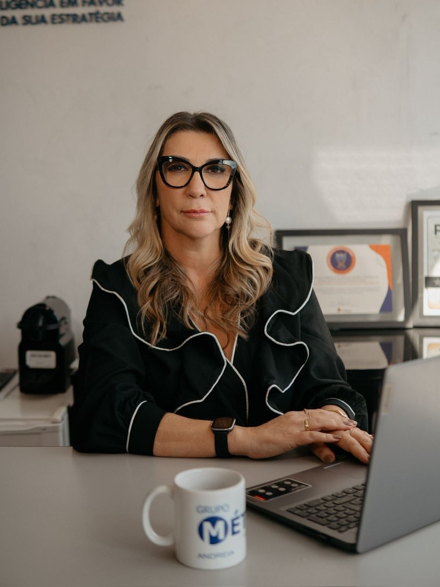

Mentoria em grupo para quem foi promovido por competência técnica, mas precisa desenvolver autoridade, comunicação e método para conduzir equipes com firmeza e respeito, sem improvisar as conversas mais difíceis do cargo.
Vagas limitadas · Turmas fechadas com 15 participantes
Identificar-se com 2 ou mais já é sinal de que há um caminho a percorrer. E de que você não está sozinho(a) nisso.
Você adia conversas difíceis porque não sabe por onde começar. E elas viram problema maior.
Evita cobrar resultados porque tem medo de "parecer duro", mas percebe que a equipe se acomoda.
Centraliza quase tudo, trabalha o dobro e mesmo assim sente que a operação não anda sem você.
Foi promovido a um cargo de liderança e sente que ninguém te preparou para lidar com pessoas.
Tem uma equipe desmotivada, com conflitos silenciosos, e não sabe como virar o clima.
Dá feedback e sente que não chega, ou chega errado. As pessoas mudam por alguns dias e voltam ao mesmo.
Nada disso é falta de competência.
É falta de método. E método se aprende.

Sou mentora de líderes há duas décadas. Minha trajetória começou na comunicação. Fiz Jornalismo e me formei em Letras, onde atuei como professora por muitos anos. Em 2006, me especializei em Gestão de Pessoas e, desde então, dedico minha vida a uma única convicção:
O líder que se desenvolve transforma a equipe. E quando isso acontece, transforma também a empresa, a família e o ambiente onde as pessoas passam 8 horas do seu dia.
Atuei com dezenas de empresas em pesquisa de clima, avaliação de desempenho e programas de desenvolvimento de lideranças. Hoje ensino, através da mentoria Líder Pronto, o método que construí com essa experiência, aplicado diretamente nas conversas reais do dia a dia de quem lidera.
Uma mentoria em grupo de 12 semanas, estruturada em três pilares que se complementam. Juntos, constroem o líder que sua equipe respeita e acompanha.
12 encontros semanais de 90 minutos pelo Zoom. Cada encontro aborda um tema crítico da liderança (feedback, cobrança, delegação, conflitos, decisões difíceis), sempre com discussão de casos reais da turma.
3 sessões individuais comigo: uma no início para mapear suas dores específicas, uma no meio para desenhar o plano de ação personalizado, e uma no final para colher os resultados do processo.
Acesso à trilogia completa de ebooks Gente & Gestão (scripts, frameworks e checklists) e à comunidade exclusiva de participantes para networking, troca de experiências e suporte contínuo.
O processo é simples, humano e sem pressão. Eu mesma atendo cada candidato para garantir que a mentoria seja o caminho certo.
10 perguntas rápidas para eu entender seu perfil, momento e principais desafios. Leva menos de 5 minutos.
Em até 24 horas, eu mesma entro em contato para uma conversa honesta sobre sua situação e seus objetivos.
Se houver fit, você entra na próxima turma. Se não for o momento, aponto outras alternativas. Sem pressão.
Preencha o formulário abaixo. Nos próximos dias, entro em contato pessoalmente pelo WhatsApp para conversarmos sobre sua situação e decidirmos juntos se o Líder Pronto é o caminho certo para você neste momento.
Quero me candidatarFormulário de candidatura · ~5 minutos · Atendimento pessoal em até 24h